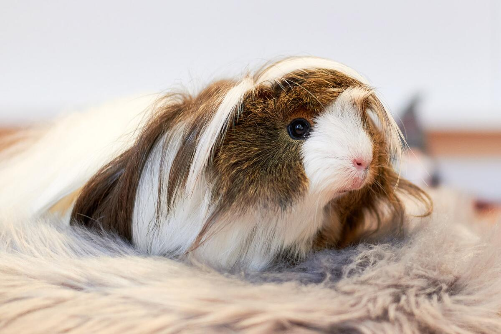
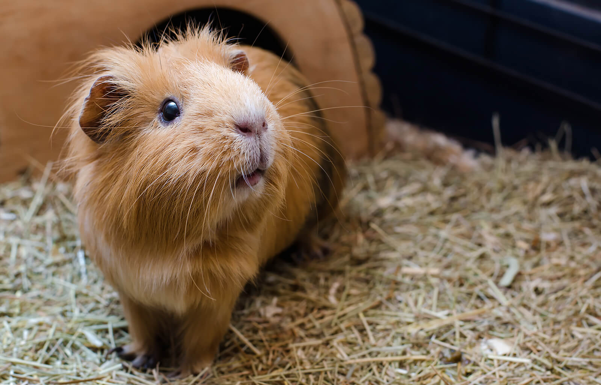
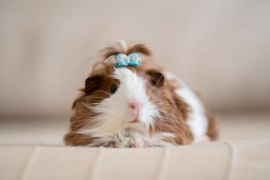
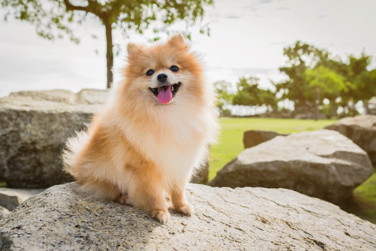
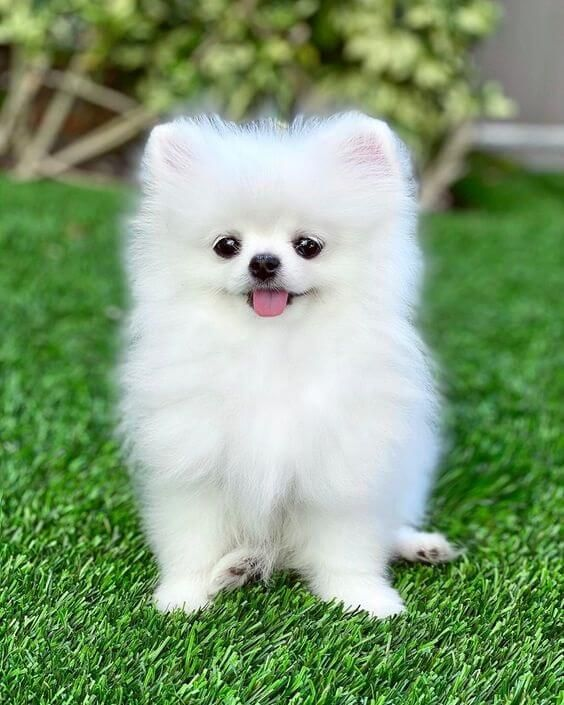
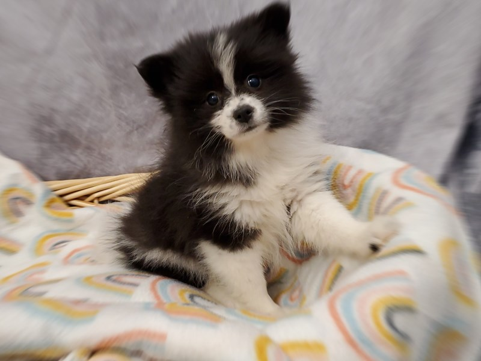

the gallery consist of three different colored guinea pigs. the first guinea pig has a combination of dark brown and white fur while the second guinea pig has completely brown fur and the last guinea pig has a combination of a lighter brown and white fur.



the gallery consists of three different colored and sized pomeranians. the first pomeranian has a combination of a golden brown and white fur while being the largest out of the three, the second pomeranian has pure white fur and is the second smallest, while the last pomeranian has a combination of black and white fur while also being the smallest out of the three.


